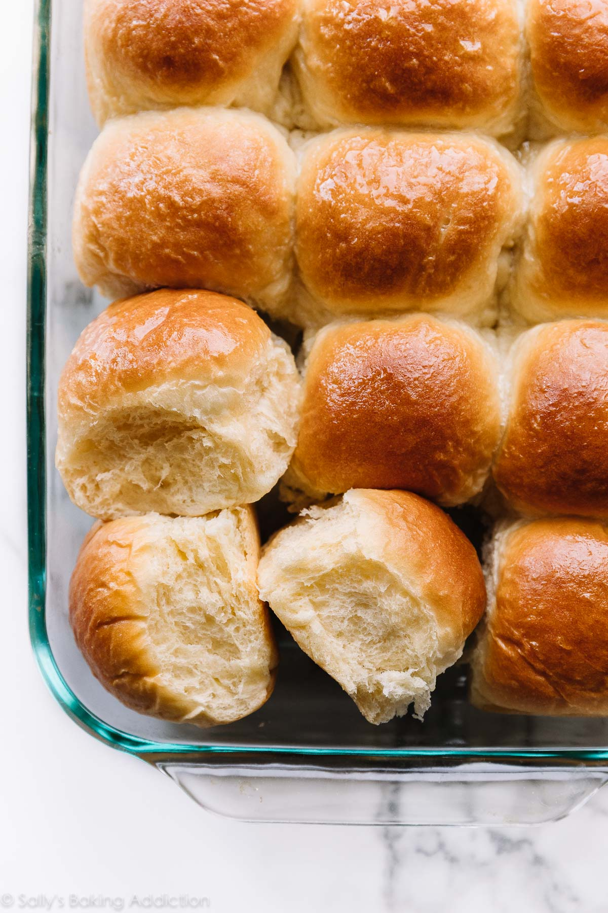

Dinner Rolls Recipe

Description:
A great addition to any dinner, these buttery dinner rolls are easy to make
and tasty to eat! Wonderfully savory and soft, any meal needs a side of these rolls made
of simple ingredients like milk, yeast, flour, and just a few more.
Ingredients:
- Milk
- Yeast
- Sugar
- Egg
- Butter
- Salt
- FLour
Steps:
- Make the dough.
- Knead the dough.
- Cover the dough and let it rise. The dough rises in about 1-2 hours in a relatively warm environment.
- Punch down the dough to release the air and shape into rolls.
- Let the rolls rise for about 1 hour.
- Bake for 20-25 minutes until golden brown. If desired, brush the warm rolls with a little honey and melted butter for extra flavor.
Within just an hour and 7 ingredients, these delicious dinner rolls can be baked to perfection!